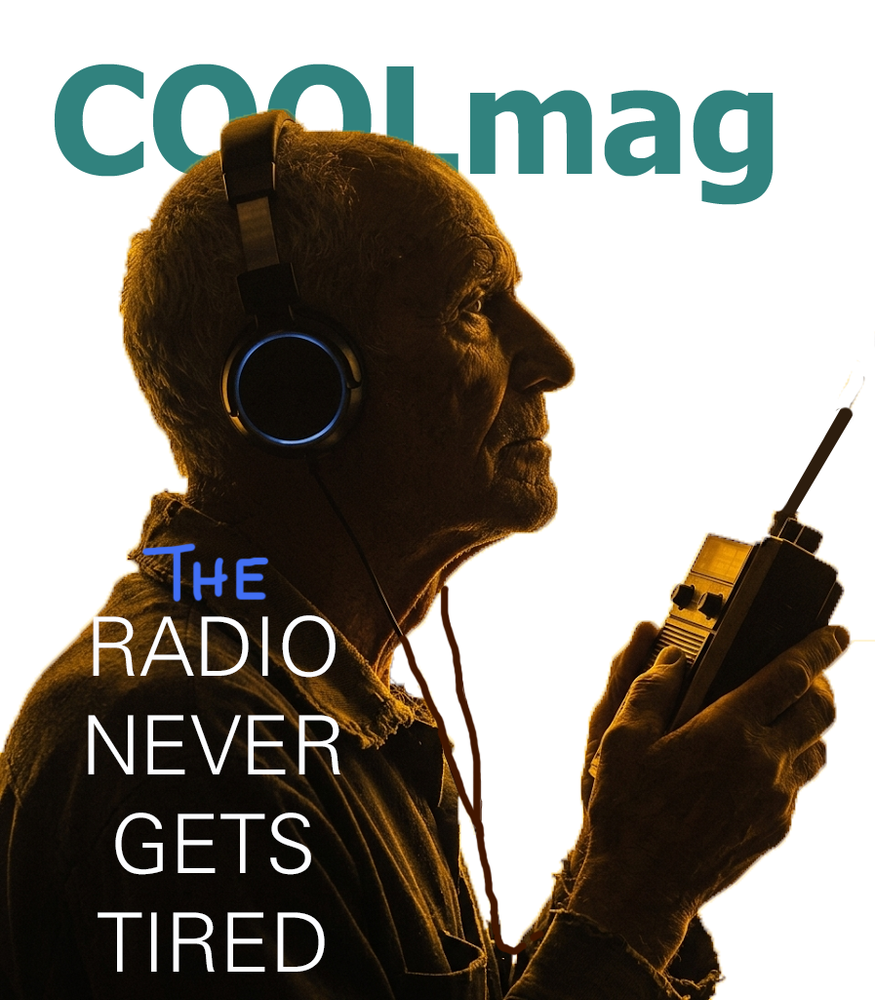

01 / SIGNAL MONITORFM · DIGITAL
CH 01Choose a station
Choose a stationWORLD RADIO
STANDBY

A LITTLE ESCAPE. ALWAYS ON.
Your world. On a different frequency.
RADIO · TELEVISION · DISCOVERY
Tap a preset to tune in · Use ★ to save or remove